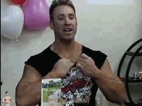
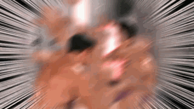

<!DOCTYPE html>
<html lang="en">

<head>
    <meta charset="UTF-8">
    <meta name="viewport" content="width=device-width, initial-scale=1.0">
    <meta http-equiv="X-UA-Compatible" content="ie=edge">
    <title>Document</title>
    <style>
        html,
        body {
            padding: 0;
            margin: 0;
            background: black;
            height: 5000px;
        }

        #tp {
            width: 250px;
            height: 200px;
            display: none;
            position: fixed;
        }

        #box {
            color: #ffffff;
        }
    </style>
</head>

<body>
    
    <!--  -->

    <div id="box">
        <!-- <p>1</p> -->
    </div>
</body>
<script>
    (function bbbb() {
        var box = document.getElementById('box');
        for (i = 1; i <= 200; i++) {
            box.innerHTML += `<p>${i}</p>`
        }

    })();
    function jingjing(bao) {
        if (bao == 1) {
            tp.onmouseover = function () { //鼠标移入事件
                tp.src = '../images/01.jpg';    //更改图片
            }
            tp.onmouseout = function () {  //鼠标移出事件
                tp.src = '../images/02.jpg';    //更改图片
            }
        }
        else {
            tp.onmouseover = function () { //鼠标移入事件
            }
            tp.onmouseout = function () {  //鼠标移出事件
            }
        }
    }

    function wenwen(ming, wen) {
        if (wen == 1) {
            if (ming >= 400) {      //！！！判断是否移动了大与等于400px
                tp.style.display = 'block';    //显示
                tp.style.bottom = '10px';     //定位
                tp.style.right = '10px';     //定位
                // tp.src = '../images/02.jpg';   //赋予图片
                jingjing(bao);
                bao = 1;
                wen = 1;
            }
            else {    //！！！小于400则隐藏
                tp.style.display = 'none';

                tp.src = '../images/02.jpg';    //更改图片
            }

        } else if (wen == 2) {
            if (ming < 400) {
                tp.style.display = 'block';    //显示
                var didi = 10;
                var oww = box.innerHTML;

                var adas = setInterval(() => {
                    box.innerHTML = ``

                    didi--;

                    if (didi == 5) {
                        box.innerHTML = ``

                    } else if (didi == 0) {
                        box.innerHTML = oww;
                        clearInterval(adas)
                    }
                }, 1000);

                var fan = setInterval(() => {//定时器
                    ming -= 40; //每次循环递减一次
                    if (ming <= 0) { //判断
                        clearInterval(fan);//结束定时器
                        wen = 1;
                    }
                    window.scrollTo(0, ming);//视窗
                }, 30);//每30毫秒运行一次

            }


        };
    }

    var bao = 1;
    var wen = 1;

    (function () {
        var tp = document.getElementById('tp'); //获取img名字为tp的节点
        window.onscroll = function () {//视窗移动事件
            console.log(window.scrollY);  //打印移动数据控制台
            var ming = window.scrollY;      //将所以移动的距离复制给ming
            wenwen(ming, wen)
        }


        tp.onclick = function () { //点击事件
            var ming = window.scrollY; //给ming赋窗口移动职
            tp.src = '../images/03.gif' //更改图片
            bao = 2;
            wen = 2;
            jingjing(bao);

            var fan = setInterval(() => {//定时器
                ming -= 40; //每次循环递减一次
                if (ming <= 0) { //判断
                    clearInterval(fan);//结束定时器
                    wen = 1;
                }
                window.scrollTo(0, ming);//视窗
            }, 30);//每30毫秒运行一次


        }


    })();


</script>

</html>